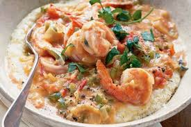

Southern Cooking
Chicken Alfredo
Apple Pie
Banan Pudding
Biscuits and Gravy
Cabbage
Hamburgers
Peach Cobbler
Potato Salad
Shrimp and Grits

Southern Style Shrimp and Grits
Ingredients
- 1 cup coarsely ground grits
- 3 cups water
- 2 teaspoons salt
- 2 cups half-and-half
- 2 pounds uncooked shrimp, peeled and deveined
- 1 pinch cayenne pepper, or to taste
- 1 lemon, juiced
- 1 pound andouille sausage, cut into 1/4-inch slices
- 5 slices bacon
- 1 green bell pepper, chopped
- 1 red bell pepper, chopped
- 1 yellow bell pepper, chopped
- 1 cup chopped onion
- 1 teaspoon minced garlic
- ¼ cup butter
- ¼ cup all-purpose flour
- 1 cup chicken broth
- 1 tablespoon Worcestershire sauce
- 1 cup shredded sharp Cheddar cheese
Preparation
- Prep: 10 mins
- Cook:15 mins
- Total:25 mins
- Servings: 4
- Yield:4 servings
Directions
Step 1: Bring a large pot of lightly salted water to a boil. Add fettuccine and cook for 8 to 10 minutes or until al dente; drain. Step 2: In a large skillet, brown chicken and mushrooms in butter until chicken is cooked through. Season with garlic salt and pepper. Add whipping cream and cook until thick, stirring constantly. Add parmesan cheese when at desired consistency. Stir in shredded chicken breast. Serve over noodles.